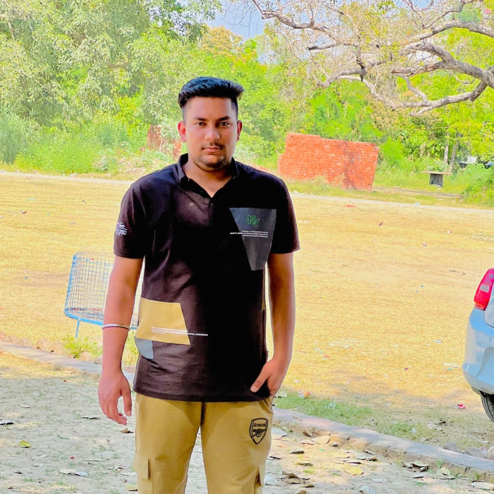

Hi! My name is Jaskaran singh parmar
I am a web developer.
I am a citizen of India. I have completed a Bachelor of Computer Application, and now I am pursuing digital design and development in the web development stream at North Island College. I love learning new things and meeting new people.
My favourite tools are
- Git hub
- visiual studio
- Chrome dev tools
My skills include
- Html/css
- My sql
- Adobe XD